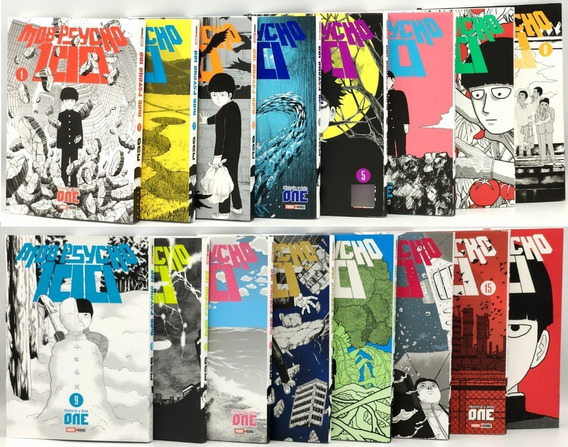

Mob Psycho 100 es un manga japonés creado por ONE, el mismo autor de One-Punch Man. La serie se publicó porprimera vez en la aplicación de manga digital "Ura Sunday" en 2012 y finalizó en 2017 con un total de 16 volúmenes tankōbon recopilatorios. La serie tiene una mezcla de acción, comedia y drama, y también explora temas más profundos como la autoaceptación, la identidad y la importancia de las relaciones humanas. Además del manga, Mob Psycho 100 también fue adaptado a una serie de anime producida por el estudio Bones y dirigida por Yuzuru Tachikawa. Si estás interesado en leer el manga de Mob Psycho 100, te recomiendo que lo hagas, ya que es una granhistoriacon personajes interesantes y una trama bien desarrollada.
MANGA
DATOS EXTRAS
1. El creador de la serie, ONE, originalmente publicó Mob Psycho 100 como una webcomic en su sitio web personal en 2012, antes de ser contratado para publicarla en la revista Ura Sunday.
2. El manga es conocido por su estilo de dibujo distintivo, que es simple y minimalista, pero altamente expresivo. Este estilo de dibujo es común en la obra de ONE, y también se utilizó en la versión webcomic de One-Punch Man.
3. Además de la adaptación al anime, la serie también ha sido adaptada a una obra de teatro y a un videojuego para smartphones.
4. La serie ha sido traducida a varios idiomas, incluyendo el inglés, español, francés, italiano y alemán, lo que ha permitido que la serie tenga una gran audiencia internacional.
5. El título "Mob Psycho 100" es una referencia al personaje principal, Shigeo Kageyama, cuyo apodo es "Mob" (abreviatura de "mobile", debido a su falta de expresión facial). El "100" en el título se refiere a su capacidad psíquica, que se mide en una escala del 1 al 100.